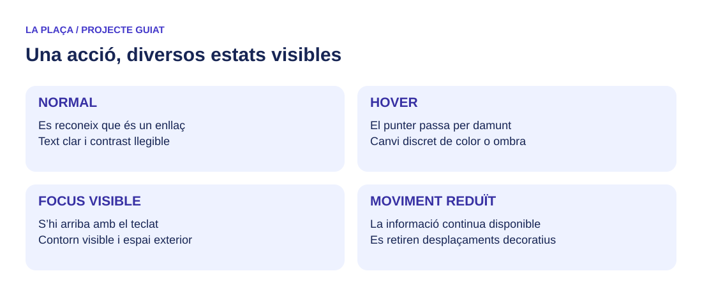

Pas 06.4 · Polix els efectes i les alternatives
Temps orientatiu: 120 minuts. Pots repartir-lo en diverses sessions.
Abans de començar
Tens la composició final amb menú i fons fix.
Objectiu: Entendre transicions, transformacions i filtres, i comprovar alternatives d’estil.
Consulta els apunts quan ho necessites: Ombres · Transicions · Transformacions

{kind=link}
1. Separa estat, transició i transformació
Un estat és una situació, com hover o focus-within. Una transició descriu com canvia una propietat entre valors. Una transformació desplaça, gira o escala visualment una caixa.
En la targeta, hover i focus-within activen un desplaçament vertical i una ombra més marcada. La transició definida en la base interpola el canvi. En el segell, rotate aplica un gir estàtic: no necessita que hi haja una animació.
2. Afig el bloc final d’efectes
Afig 06.4 al final d’estils.css. Els selectors nth-child donen variants cromàtiques a les il·lustracions de targeta amb hue-rotate. És un efecte visual; el contingut no depén del color.
Compara una duració de .2s i una de 2s en les eines del navegador. Explica com afecta la resposta percebuda i restaura el valor del model o un altre justificat. Evita transition:all si només vols animar propietats concretes.
3. Revisa focus i moviment reduït
Passa el ratolí per una targeta i després arriba al seu enllaç amb Tab. La targeta també es destaca amb focus-within, i l’enllaç conserva el contorn de focus. L’efecte de targeta no substitueix el focus del control.
Activa prefers-reduced-motion en el sistema o l’emulació. Les transicions es retiren i la targeta deixa de desplaçar-se. El segell pot conservar una rotació estàtica: una composició inclinada no és, per si mateixa, moviment.
4. Prova la impressió
Obri la previsualització d’impressió del Programa. La navegació i el peu desapareixen, les targetes intenten evitar talls interns i el fons general passa a blanc. Revisa també la franja: el text ha de continuar llegible sense la imatge de fons.
No assumes que la impressió reprodueix exactament la pantalla: depén del paper, marges i opcions del navegador. Registra la prova que has fet.
5. Crea un full alternatiu en el laboratori
En mostres.html, conserva el full base i afig:
| HTML | |
|---|---|
Crea css/contrast.css:
| CSS | |
|---|---|
Prova’l amb un navegador que permeta seleccionar estils de pàgina, com Firefox. Si no disposes d’aquesta opció, canvia temporalment rel a stylesheet per verificar les regles i documenta la limitació. No estàs construint un selector de tema amb persistència ni demostrant conformitat d’accessibilitat amb aquesta prova.
6. Valida i tanca E6
Valida HTML i CSS amb les eines de Recursos. Analitza els avisos: una propietat moderna pot requerir revisar el perfil que interpreta l’eina. Conserva errors corregits i avisos justificats.
Entrega el projecte, mostres i full alternatiu, captures d’amplàries, proves de menú, fons, teclat, moviment reduït i impressió. Les evidències han de correspondre al teu codi final.
Bloc de codi del pas 06.4
Fitxer: css/estils.css. Afig aquest bloc al final, conservant els passos anteriors. No el dupliques si ja l’has incorporat. Llig les explicacions i aplica’l per grups de regles.
Comprova que pots continuar
- Distingixes transició, transformació i estat.
- La navegació amb teclat té focus visible.
- Has comprovat moviment reduït, impressió i full alternatiu.
Guarda una evidència: captura o anotació de la prova, amb el resultat observat. Afig una frase al registre de seguiment.
Pregunta d’autocomprovació
Un efecte hover garanteix que el mateix contingut siga accessible amb teclat?
Mostra la resposta després d’intentar-ho
No. Cal conservar el contingut disponible i els controls operables amb focus. Per això el model tracta també focus-visible i focus-within.
Si no ix com esperaves
| Símptoma | Primer que has de comprovar |
|---|---|
| L’efecte es mou encara amb preferència reduïda. | Revisa l’ordre del bloc de preferències i si la regla coincideix amb el component. |
| El full alternatiu sembla inert. | Comprova el suport del navegador i el mètode d’activació, no només la ruta. |
Punt de control
Descarrega la versió de referència fins a aquest pas. Obri-la en una carpeta diferent i compara la peça que et falla. Si la utilitzes com a base, indica-ho en el registre i repeteix la comprovació amb una modificació pròpia. Les evidències personals i el laboratori no estan resolts en aquest ZIP.